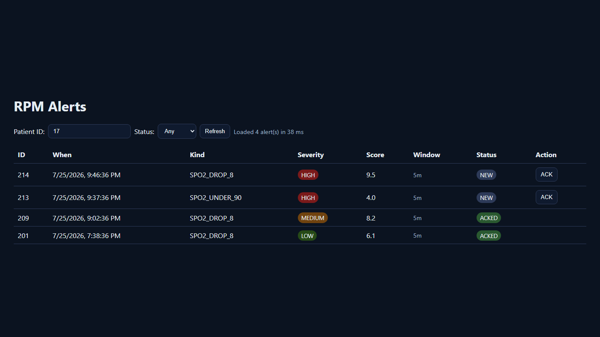

A remote patient monitoring backend: a FastAPI service ingests vital-sign readings, a Celery worker scans them for SpO2 danger signals, and the resulting alerts surface through an API and a small polling UI — all wired together with PostgreSQL, Redis, and Docker Compose.
A remote patient monitoring pipeline has three jobs that don't fit in one place: taking in a steady stream of vitals from devices, deciding which readings actually matter, and getting that decision in front of a clinician without drowning them in raw numbers. That's an ingestion API, a background process that can watch trends instead of just single readings, and a way to review and clear what it flags — each with a different failure mode if it's missing.
POST /v1/webhook/vitals endpoint with range validation (heart rate 20–250, SpO2 50–100) and a bounded timestamp window, so malformed or stale readings never reach the database.app/worker.py) walks a patient's recent vitals and inserts an alert when SpO2 drops 8+ points between consecutive readings, or falls under 90 outright, decoupled from the request path so ingestion never blocks on it.GET /v1/alerts and an idempotent POST /v1/alerts/{id}/ack, plus a small polling UI to review and clear alerts without touching the API directly.scripts/seed_patients.py seeds 50 patients with vitals and a realistic spread of alerts, and scripts/generate_stream.py emits an NDJSON vitals stream with an injected SpO2 desaturation event for replaying against the webhook.
app/static/index.html), rendered locally with representative sample data seed / stream scripts
│
▼
┌──────────────────────┐ ┌──────────────┐
│ FastAPI (app/main) │◄──────►│ PostgreSQL │
│ webhook · alerts API │ │ (pgvector) │
│ static UI │ └──────────────┘
└──────────┬────────────┘
│ enqueue
▼
┌──────────────────────┐ ┌──────────────┐
│ Celery worker │◄──────►│ Redis │
│ (app/worker.py) │ │ broker/backend│
│ scan_for_alerts │ └──────────────┘
└──────────────────────┘docker-compose.yml also wires up an OpenTelemetry collector, Prometheus, and Grafana as groundwork for the observability step on the roadmap — the API doesn't export a /metrics endpoint yet, so those are provisioned but not doing anything useful today. Same story for the pgvector-enabled Postgres image: the extension is available, but the guideline-grounded alert explanations it's meant to support aren't built yet.
| Method | Path | Auth | Description |
|---|---|---|---|
| GET | /health | — | DB connectivity check |
| POST | /v1/webhook/vitals | Bearer | Ingest one vitals reading |
| POST | /v1/alerts/scan/{patient_id} | — | Enqueue an alert scan for a patient |
| GET | /v1/alerts | — | List alerts, filterable by status |
| POST | /v1/alerts/{id}/ack | — | Acknowledge an alert (idempotent) |
While pulling this together I found that the static UI's mount (app.mount("/", StaticFiles(...))) had been registered partway through the route file, ahead of several API routes. Starlette dispatches to the first matching route, and a root mount matches every path, so /health, the webhook, and the scan endpoint were silently unreachable behind it. Moved the mount to the end of the file, which also surfaced and let me delete a dead, unreachable second copy of the /ack handler — the kind of bug that's invisible until you actually enumerate the route table.
End to end today: ingest → validate → store → scan → alert → view/ack in the UI, with realistic seeded demo data. Auth is a static bearer token rather than JWT. The observability stack and guideline-grounded explanations are infrastructure without a feature behind them yet — both are next on the roadmap, along with load testing and CI.